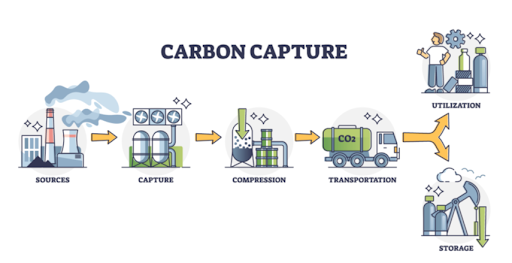
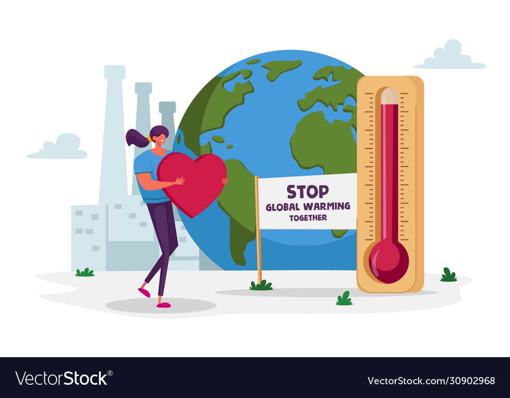
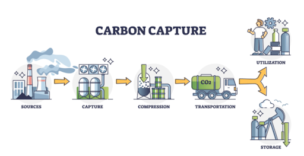
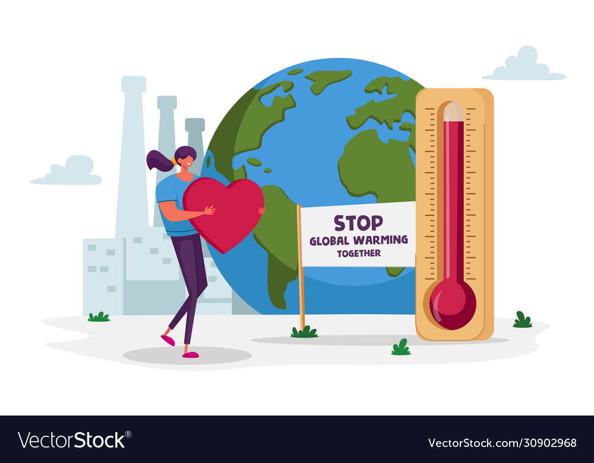

สรุป

 



ภาวะโลกร้อนเป็นความท้าทายที่สำคัญที่ต้องใช้ความพยายามร่วมกันเพื่อแก้ไข การดำเนินการเพื่อลดการปล่อยก๊าซเรือนกระจกช่วยให้เราสามารถชะลอภาวะโลกร้อนและลดผลกระทบได้ การเปลี่ยนไปสู่พลังงานหมุนเวียน การปรับปรุงประสิทธิภาพการใช้พลังงาน และลดของเสีย คือแนวทางแก้ไขบางส่วนที่เราสามารถนำไปใช้เพื่อลดการปล่อยก๊าซเรือนกระจก